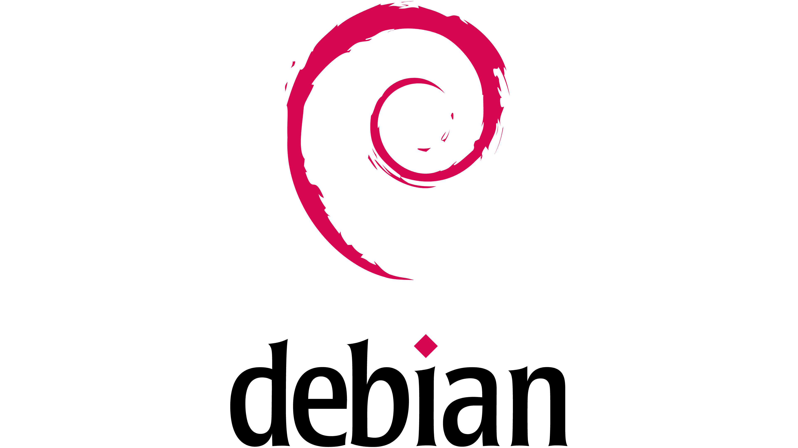

Présentation
Debian est une distribution Linux largement utilisée, connue pour sa stabilité et son vaste écosystème de logiciels.
Cliquez sur le logo juste au dessus pour aller sur le site officiel
Caractéristiques
| Caractéristique | Description |
|---|---|
| Origine | 1993, Ian Murdock |
| Basé sur | Indépendant |
| Popularité | Très populaire, utilisé comme base pour Ubuntu |
Avantages de Debian
- Très stable
- Grande communauté
- Vaste dépôt de logiciels
- Support pour de nombreuses architectures matérielles
Apprenez en plus sur les raisons pour lesquelles vous devriez utiliser debian
En cliquant ici